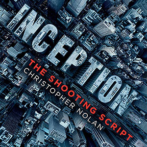

I used to work in the finance department of international groups (as an auditor, business controller, cash & credit manager). I decided to quit my job and start my own project in french-speaking Switzerland.
|  |
2010 - InceptionInception is a 2010 science fiction action film written and directed by Christopher Nolan, and co-produced by Emma Thomas. The film stars Leonardo DiCaprio as a professional thief who steals information by infiltrating the subconscious, and is offered a chance to have his criminal history erased as payment for the implantation of another person's idea into a target's subconscious. |
2006 - The Pursuit of HappynessThe Pursuit of Happyness is a 2006 American biographical drama film based on entrepreneur Chris Gardner's nearly one-year struggle being homeless. Directed by Gabriele Muccino, the film features Will Smith as Gardner, a homeless salesman. Smith's son Jaden Smith co-stars, making his film debut as Gardner's son, Christopher Jr. |
2006 - La piel que habitoThe Skin I Live In (Spanish: La piel que habito) is a 2011 Spanish psychological horror film written and directed by Pedro Almodovar, starring Antonio Banderas, Elena Anaya, Marisa Paredes, Jan Cornet, and Roberto Álamo. The Skin I Live In is based on Thierry Jonquet's novel Mygale, first published in French and then in English under the title Tarantula. |
This page has been coded during the FullStack program @LeWagon Lausanne.